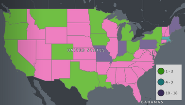
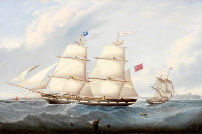

Statistics
The Bigney family name was found in the USA, the UK, Canada, and Scotland between 1840 and 1920. The most Bigney families were found in Canada in 1911. In 1920 there were 18 Bigney families living in Massachusetts. This was about 25% of all the recorded Bigney’s in the USA. Massachusetts had the highest populations of Bigney families in 1920.
BIGUENET, Beguenet: a name pertaining in the 17th century to Blamont, and long settled there. In 1636 we find a family of Biguenet there; in 1655 we note Isaac Beguenet among the townsmen of Blamont. Does the name originate from bégue (stammer) or from beguin (darling, hood, child’s cap) in its various spellings?
This ship is an example of the type of ship, a brig, that Jacques Biguenet booked passage on to travel to the American Continent in 1752. Many Bigney Families descend from him.